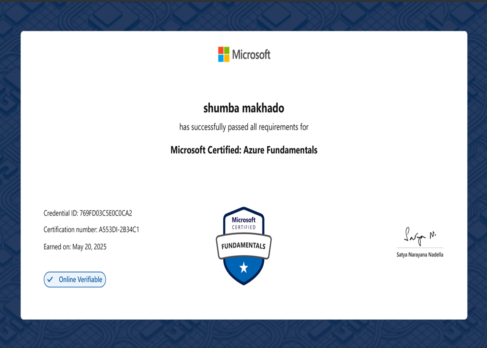
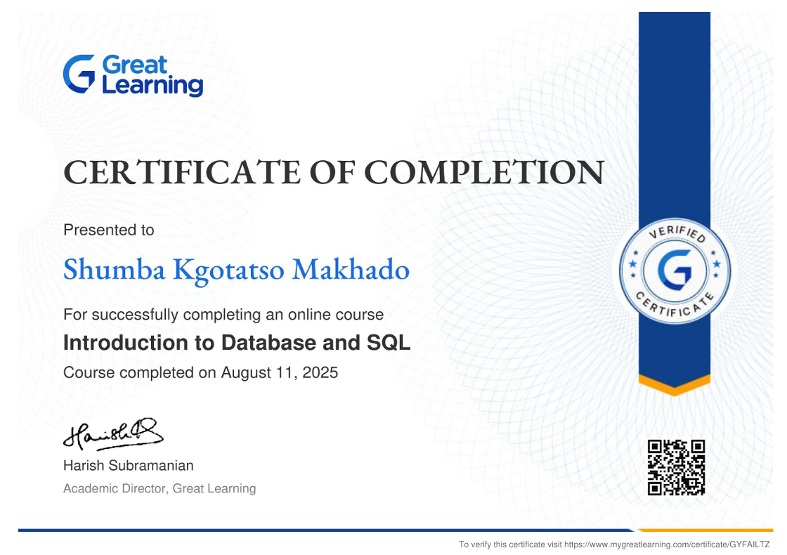
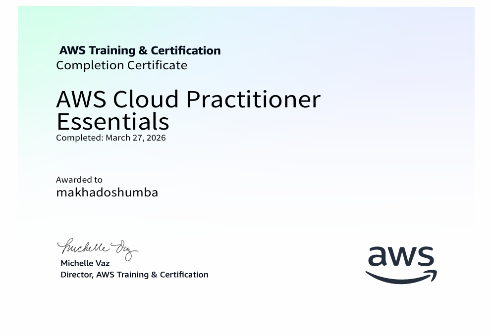

Certifications




Software & Cloud Enthusiast | Passionate About Digital/Cloud Solutions currently focused on Appdev, Webdev, SSMS, AWS, Azure, CI/CD pipelines and scalable systems.
View ProjectsI am a final-year Software Engineering student with a strong foundation in software engineering, cloud computing, web development, application development, and distributed systems. I enjoy designing and building reliable, scalable, and user-focused software solutions.
My experience includes developing cloud-based applications using AWS, Azure, Render, and Vercel, implementing CI/CD pipelines, working with serverless architectures, and automating deployment workflows. I also build responsive web applications and software applications using modern development technologies.
In addition, I have hands-on experience with Microsoft SQL Server Management Studio (SSMS), database design, SQL querying, and integrating databases with both websites and desktop applications. I am capable of designing relational databases, connecting them to web and software applications, and developing full-stack solutions that efficiently manage and process data.
My career goal is to become a Software Engineer while specializing in the design, development, and deployment of secure, scalable cloud-based systems. As I gain experience, I aspire to grow into a Cloud Engineer and ultimately progress into a Cloud Solutions Architect role.



Full-stack Mondeor Community Portal, featuring alerts, complaint submission, role-based admin/super-admin dashboards, secure authentication, database integration, and a CI/CD pipeline for seamless production deployment.
GitHub →Built a serverless CI/CD monitoring dashboard using Azure Functions and GitHub API to track deployment status in real time and improve pipeline visibility.
GitHub →Email: makhadoshumba@gmail.com
Phone: 067 943 5936
GitHub: github.com/makhadoshumba
LinkedIn: linkedin.com/in/shumba-makhado-38631b411